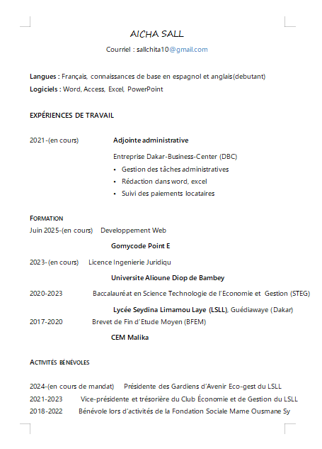

Bienvenue
Bienvenue sur mon portfolio personnel. Je m'appelle Aïcha Sall, étudiante en ingénierie juridique à l’Université Alioune Diop de Bambey, passionnée par le développement web et la cybersécurité. Mon parcours est le reflet d’un engagement profond : allier la rigueur du droit à la puissance de la technologie pour construire un avenir meilleur au Sénégal et en Afrique. Curieuse, persévérante et déterminée, je crois fermement que les compétences numériques sont des leviers incontournables pour relever les défis juridiques et sociétaux de demain. C’est pourquoi je me forme activement au développement web, tout en renforçant mes connaissances en cybersécurité, avec l’ambition d’innover et de sécuriser les solutions numériques de notre continent. À travers ce site, je vous invite à découvrir mon univers, mes projets, ma vision et mes compétences. Que vous soyez professionnel, recruteur, étudiant ou simplement curieux, j’espère que vous trouverez ici l’inspiration d’une jeunesse qui ose, qui apprend, qui construit. Merci de votre visite
À propos
Je m’appelle Aïcha Sall, étudiante en ingénierie juridique à l’Université Alioune Diop de Bambey. Je m’intéresse particulièrement à l’intégration des technologies numériques dans le domaine du droit afin de moderniser et sécuriser les pratiques juridiques au Sénégal. Mon parcours combine une formation juridique solide avec un apprentissage approfondi en développement web et cybersécurité. Cette double compétence me permet de comprendre les enjeux techniques et juridiques liés à la transformation digitale. Je suis motivée par la volonté de contribuer activement au développement de solutions numériques adaptées aux besoins locaux, en favorisant l’innovation, la protection des données et l’accès au droit pour tous.
Cv
travail
Actuellement étudiante en ingénierie juridique, je suis également en formation de développement web. Mon objectif principal est de valider mon cursus universitaire tout en acquérant des compétences solides en programmation. Je me concentre sur l’apprentissage du développement web pour renforcer mon profil et préparer mon avenir professionnel, sans chercher de stage pour le moment. Je suis motivée à maîtriser ces nouvelles compétences afin de pouvoir, à terme, contribuer efficacement aux projets numériques dans le domaine juridique ou au-delà.